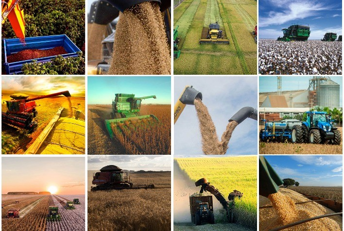

A agricultura existe ha muito tempo,desde quando os nossos anscestrais parraram de migrar para regioes diferentes em busca de comida e comecaram ha plantar seus alimentos isso ja era uma forma de agricultura A agricultura e muito inṕortante para o nosso pais um dos setores que mais contribui para o crescimento do PIB nacional e que responde por 21% da soma de todas as riquezas produzidas, um quinto de todos os empregos e 43,2% das exportações brasileiras, chegando a US$ 96,7 bilhões em 2019
O setor agropecuário possui um papel estratégico para o nosso país, já que somos a terceira maior produção agrícola do mundo (ficamos atrás apenas da China e dos Estados Unidos) e capazes de abastecer o consumo interno e ainda garantir o título de maior exportador do mundo.
